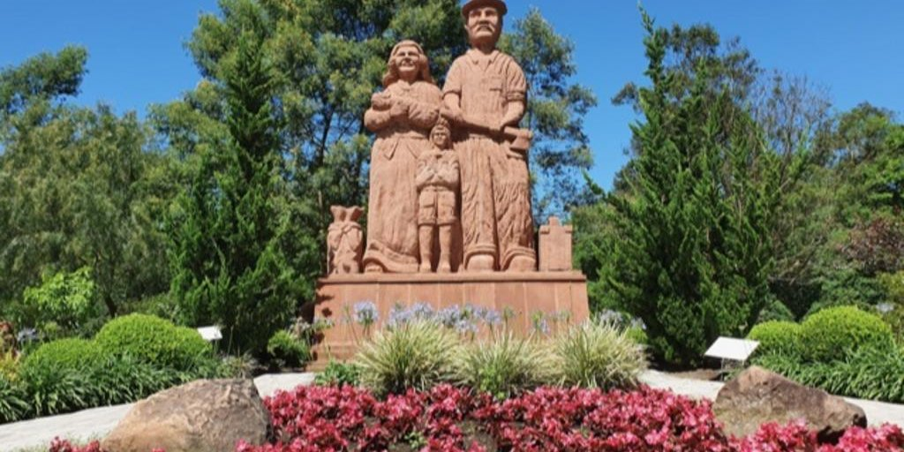
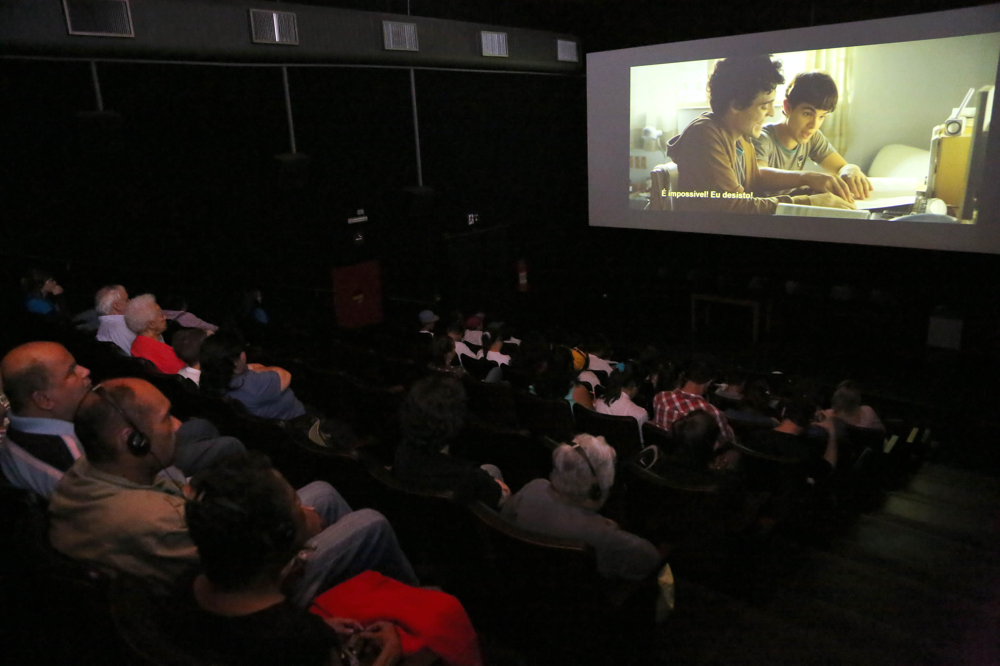

O Esculturas Parque Pedras do Silêncio, atração turística de Nova Petrópolis, na Serra, passa a ter uma plataforma de audiodescrição para que os deficientes visuais possam ter a experiência de conhecer o espaço.
Pessoas com deficiência são protagonistas das obras selecionadas pelo projeto Pra Todos Mostra de Filmes com Acessibilidade, disponível em Caxias no domingo (24/10). As seis sessões ocorreram na Sala de Cinema Ulysses Geremia e contaram com recursos de acessibilidade em audiodescrição, janela de Libras e legendas descritivas para surdos e ensurdecidos.
